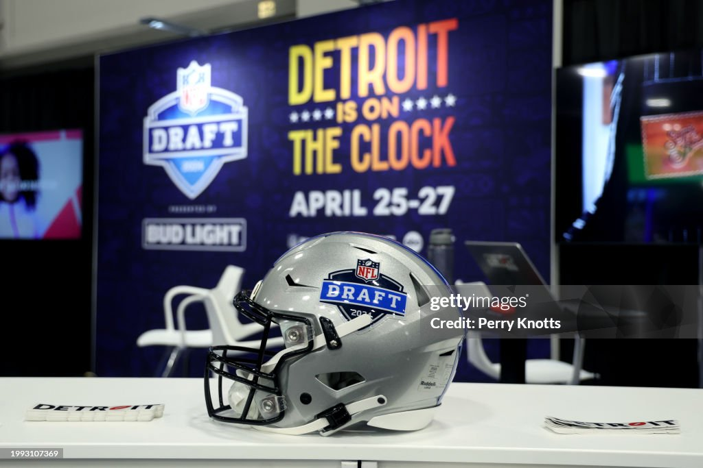

By Brad Spielberger
Posted April 3, 2024
With many talented 2024 NFL Draft prospects unable to compete at the NFL scouting combine due to injuries, or simply preferring to save the workout for their school’s pro day, we’re highlighting some of the players who boosted their stock or answered questions about their profile on the pro day circuit.
After all the talk entering the pre-draft process was centered on the notion that McKinstry was the more refined technician but lesser athlete compared to fellow Alabama cornerback Terrion Arnold, McKinstry actually ran a faster 40-yard dash with a faster 10-yard split despite weighing in 10 pounds heavier than Arnold. McKinstry is also not far removed from a Jones fracture injury that kept him out of combine testing, so there may be room for improvement at full health with no breaks in training.
McKinstry ran a solid 40-yard dash with times ranging from 4.47 to 4.52 seconds, including a really strong 1.44-second 10-yard split.
Penix made a point to prove doubters wrong during his dro day, particularly with respect to his running ability after his time at Washington was largely spent as a sharpshooter from the pocket.
While no one expects Penix to become a scrambling sensation at the next level, it certainly helps that he ran a 40-yard dash below 4.6 seconds and looked very smooth in doing so. The main question with Penix will be the medicals, because he checked off some athletic boxes and we already know he has a cannon attached to his left shoulder.
Barton has been rising up draft boards since the beginning of the pre-draft process, particularly after a strong showing in Mobile, Alabama, at the Senior Bowl, where he lined up at every spot across the offensive line for evaluators. And he held up there at guard and center after primarily playing left tackle for the Blue Devils.
The unofficial testing numbers from Barton’s pro day were strong across the board, with one drill sticking out. Josh Norris of Underdog Fantasy has long touted the predictive nature of a good short shuttle time for offensive linemen, with players who test under the threshold of 4.47 seconds routinely going on to have very strong NFL careers, no matter where they’re selected in the NFL draft.
Barton’s unofficial short shuttle time was a 4.43, and he also ran a 4.84-second 40-yard dash at 6-foot-5 and 311 pounds.
We don’t quite see the Deebo Samuel comparisons on Corley's tape, but he is undoubtedly a nightmare on manufactured touches, able to make players miss or occasionally run them over in space. NFL scouts clocked him in the mid-4.4-second range on his 40-yard dash.
Corley also recorded 27 reps at 225 pounds on the bench press, an outrageous number for a 5-foot-11 wide receiver, especially considering that his 32 1/8th-inch arms are long for his size. The arm length and strength would suggest Corley can be a weapon as a run blocker, with some comparisons already drawn to Shanahan offense wide receivers like Samuel, who had almost the exact same height and weight measurements coming out of South Carolina, plus a similar playstyle.
For whatever reason, Latu was labeled a lesser athlete headed into the pre-draft process, and while he hasn’t tested off the charts in every drill, his explosive first step off the line and phenomenal contact balance laterally as he slashes upfield are reflected in some of his numbers.
The Athletic’s Dane Brugler shared Latu's pro-day agility testing scores, and as he said, they are great numbers for a player of his size: a 7.09 three-cone time, and a short shuttle time of 4.34.
After Latu's medical retirement in college, there will be questions from NFL teams throughout the evaluation process, but there is absolutely no question that he is the most skilled edge rusher in this class as of today, with plenty of athletic ability at his size to translate to the next level.
McConkey proved he had great straight-line speed at the NFL scouting combine with a 4.39-second 40-yard dash (90th percentile), as well as good acceleration with a 1.52-second 10-yard split (87th percentile). All of his testing throughout the process was evident on film, but it's still great to see, given he battled through some injuries in 2023.
What really stood out for McConkey at his pro day were his elite agility scores:
While McConkey was primarily an outside wide receiver during his college career, he may play at least a decent portion of his snaps on the inside at the NFL level. The route running, change of direction and stop-and-start ability on tape already showed us he was a great lateral athlete, but these numbers cement that for him.